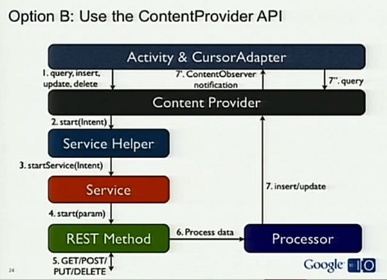

Over the last week, I've been doing a crash course in Android programming. Reynold and I have been working on our combination CS294-35 Mobile Development project and AMP Lab retreat demo, which is next week. Coming from a traditional web and application development background, there are some things Android does comparatively well, some comparatively poorly, and some that just irritate me.
This isn't a tutorial, but it'd probably be a useful read if you're thinking of getting started with Android development. My pain, your gain.
The Good
I like the relatively smooth integration of the Android SDK with Eclipse. It's pretty easy getting to the Hello World stage with the Android emulator. Autocompletion works as expected. Debugging is easy, since the emulator will throw stacktraces in LogCat even when not in debug mode, and it's just as easy to do these things on actual phone hardware. It was also easy to get things running on a real phone; the Motorola Droid I was using didn't require Verizon activation or rooting or paying for a developers license. Check a few boxes in the settings menu, and you're off to the races.
There's also a thriving community of Android developers. It's very easy to Google your problems (and believe me, that's important). StackOverflow seems very helpful.
I also appreciate having an emulator that works so effectively. I wish that the emulator's camera had a more useful test pattern, but that's forgivable. Otherwise, I had very few situations where the emulator behavior differed from actual hardware.
The Bad
There's a pretty large jump between Hello World and the next, less trivial tutorial in the series (Notepad), and there's a huge jump from Notepad to making your own app.
Notepad introduces what has to be the messiest part of Android (and indeed, mobile) development: the application lifecycle. Take a look at the flowchart in that link. An Activity is basically a single screen of an application. Whene a new activity is switched in, the old one goes through onPause() and maybe onStop(). After that, it's fair game for the Android task killer, which starts discriminately killing off applications if memory is low.
This is a huge hassle from a traditional app developer standpoint, since it used to be that the OS would save all your application state on a context switch, and restore it when your app is switched back in. Modify some variables, context switch out, context switch back in, and the variables are how you left them. In Android, that's no longer true. Now, you are forced to serialize all (all!) of your live state out to one of the Android persistent datastores, which most of the time means using (SQLite)[http://developer.android.com/guide/topics/data/data-storage.html#db]. If you don't do this, it means that your app works correctly most of the time (since the task killer doesn't always kick in), but occasionally, bad things will happen: settings get reset, entered form data disappears, just plain bugs.
This becomes especially terrible when you're doing any kind of network programming. This introduces a whole mess of concepts that'd require another full blog post (Service, ContentProvider, and background reading), but the basic problem is, how do you reliably make a request to a server if your request might die at any time (due to the application lifecycle)?
You end up having to watch this Google I/O talk on how to correctly implement REST in Android, which features this wonderful diagram that Reynold and I implemented:

Yuck. Wasn't REST supposed to be the easy way?
The very naive way of doing network requests is directly in your Activity, which blocks the UI thread (leading to the app freezing) and is clearly bad practice, even to a novice. The slightly-less-naive way is using a Service, in which you have to start a new thread to make the request (or else it will again block the UI thread). This will mostly work, since Services sort of run in the background, but is still prone to erratic bugs because Services are still under the authority of the Android task killer. So, you end up resorting to ContentProvider, and the filling out the 6 boxes in the diagram you see above.
The same story can be found for getting phone location. The documentation page isn't bad, but it quickly becomes obvious that it's complicated to do it both correctly and well. Your app has to balance using GPS vs. celltower triangulation based on accuracy and availability, cache old locations to get an initial fast fix, invalidate said cached locations if they're too old or too inaccurate, and minimizing overall usage of these radios since they're the biggest battery killers in a phone. It's a lot of manual heavy lifting to do it right, and it's easy to do it incorrectly (presenting inaccurate result) and poorly (quickly draining battery).
The Ugly
These are some random warts in the platform, not fundamental issues, but annoying (and fixable).
- There are a lot of concepts thrown at you in the tutorials, and Notepad doesn't go far enough. I'd like to see some more tutorials, and more beginner-friendly explanations of classes like Activity, Service, Intent, and View, and some high-level advice on designing for the antagonistic application lifecycle.
- The development emulator is really slow. It takes a few minutes to start up, and there's definitely lag while operating it. Comparatively, the iPhone emulator starts almost instantaneously, and feels just as snappy as a real iPhone.
- No tutorial on how to programatically build a UI. I get that XML is the preferred way since you can do it graphically in Eclipse, but that falls short pretty fast.
- The XML layout is decidedly less powerful than CSS+HTML. No templates, no style rules, lots of repeating the same padding, margin, and textsize parameters in each file. It's a nightmare for maintainability; fortunately mobile UIs are simple.
- There isn't a provided library of icons. I think this is a no brainer; I want some basic icons for things like "list", "settings", "home" that I see used in core Android, but these aren't available in the SDK.
- I can't figure out how to do not-fullscreen Google Maps with panning and zoom. iPhone can do it, but somehow all the Android maps I see that support pan+zoom are fullscreen.
- Hardware and software keyboards have different event listeners and behaviors. Software keyboard has an unfortunate habit of staying open even when changing tabs in a TabView.
- I disliked having to write something like 4 serialization/deserialization routines for every object. This was due to having to store all my state as Java objects, in SQLite, in JSON to talk to the server over REST, and also as visible data on screen. An ORM or something would be great.
Conclusion
This experience made me realize why many Android apps suck: it's hard to do things the right way, and easy to hack it together the wrong way. I don't think Android is alone on this one, from what I hear, iPhone isn't much different in terms of application lifecycle. From the OS point of view, it's great that any app can be killed at any time to save resources. I'm betting this results in huge wins in battery life, performance, and code size. However, it just shifts that burden onto app developers, who aren't used to doing this kind of thing, and there aren't libraries or APIs in place to make this as easy as it should be.
I'm not totally turned off of mobile app development, since I still believe that mobile is essentially the future of computing, but I really think it could be a lot better. Personally, HP's webOS appeals to me since HTML+CSS+JS is a much more natural way of writing applications (and that's not just my bias as a web developer), and more pure Linux-based OSs like MeeGo are certainly easier to program (but then you lose the noted benefits of the "kill anything at anytime" model). I'm still willing to bet on Android, but it still needs a lot of work before it's a first-class application development environment.